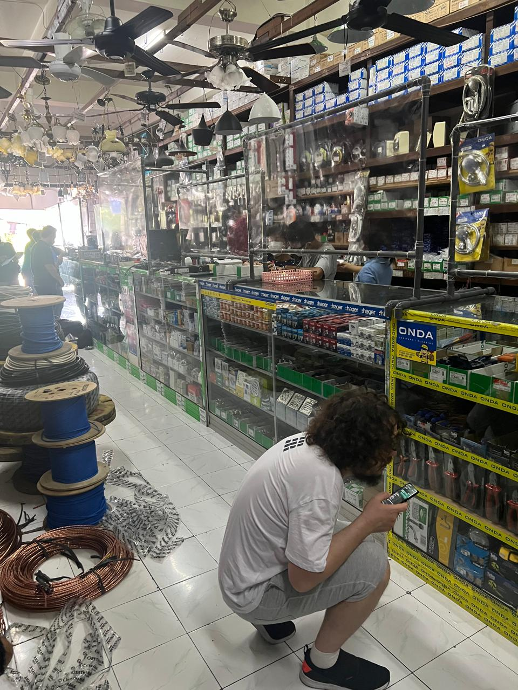
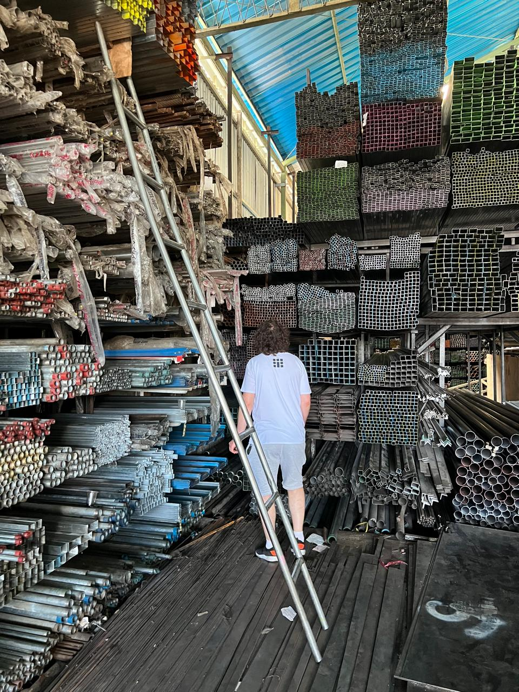
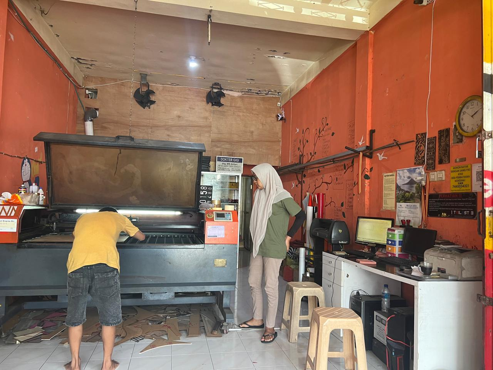
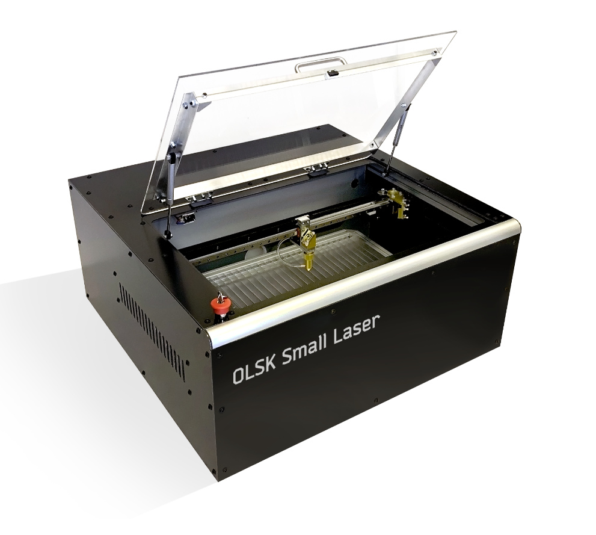
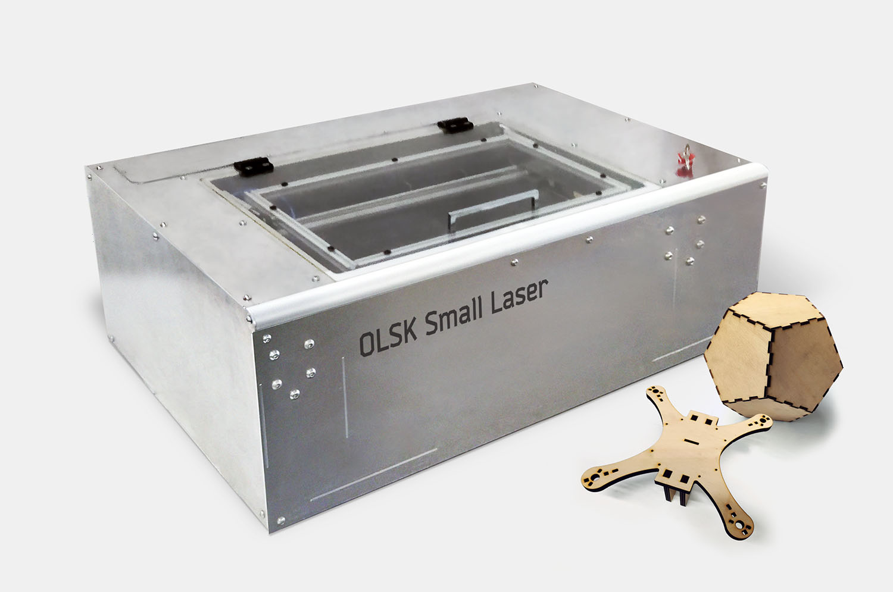

Bali Fab Fest — Fabulaser Mini
Bali, Indonesia · October 2022

Fabulaser Mini building workshop at Bali Fab Fest 2022. The machine was built almost entirely with local resources — sourcing electronics, metalwork, and fabrication from workshops across Bali.



Aluminum laser cutting during the build
OLSK Small Laser V2
The machine built in Bali is part of the Fabulaser Mini lineage, now released as the open source OLSK Small Laser V2 through the Open Lab Starter Kit.

The OLSK Small Laser V2 is a compact but powerful desktop laser cutter, designed to fit in fab labs and classrooms. It lowers the barrier to laser-cutting technology with an ideal balance of performance and cost. With an optimized 40W CO2 laser it can cut 8 mm acrylic, and its 600×400 mm cutting area is one of the largest in its machine category. The compact footprint (1161×812×390 mm) allows use on a normal desk.
A tool to make, a tool to learn
Compared to commercial laser cutters, OLSK Small Laser adds a valuable learning experience. Built together with students during a workshop, it gives users not only laser cutting capability but also deep knowledge of how the machine works — electronics, mechanics, and lasers — so they can maintain it, improve it, and even design their own machines.

Specifications
- Laser source: 40W CO2
- Cutting area: 600×400 mm
- Resolution: 0.05 mm
- Max cutting thickness: 10 mm acrylic, 6 mm MDF, 8 mm plywood
- Max speed: 1000 mm/s
- Motion: linear rails and linear shafts
- Frame and housing: interlocked aluminum plates
- Bed: aluminum lamella
- Sensors: inductive probes
- Controller: 32-bit Teensy 4.1
- Firmware: grbl-hal
- Machine dimensions: 1161×812×390 mm
The Kit
The OLSK Small Laser Kit is a one-stop solution with all parts and tools to build and use the laser cutter, including air assist compressor, exhaust fan, indoor air filter, water chiller, and all required connections.
Project Files
- GitHub repository
- Interactive assembly manual
- Bill of materials (PDF)
- Firmware
- CAD files
- Assembly workbook (PDF)
- Wiring schematic (PDF)
Credits
OLSK Small Laser V2 designed, developed, and manufactured by InMachines Ingrassia GmbH (Daniele Ingrassia).
Hardware: CERN-OHL-W. Documentation and media: CC BY-SA 4.0.